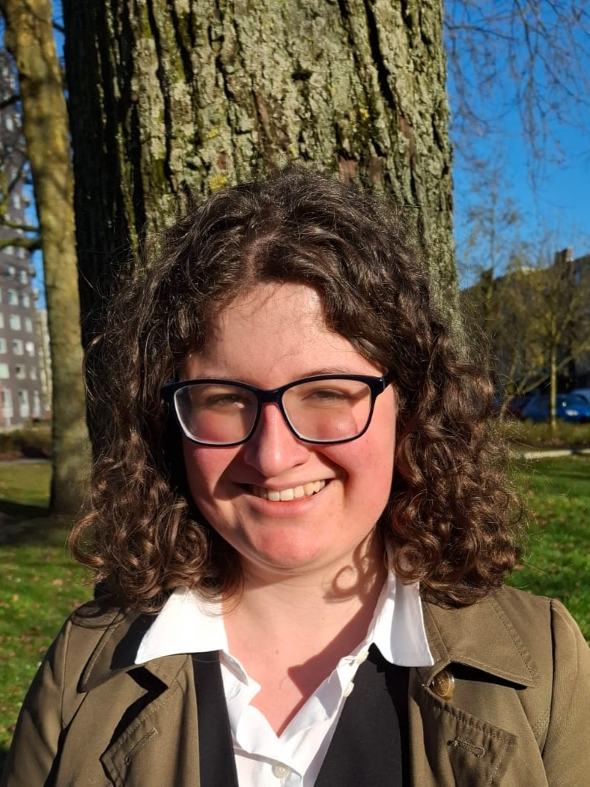
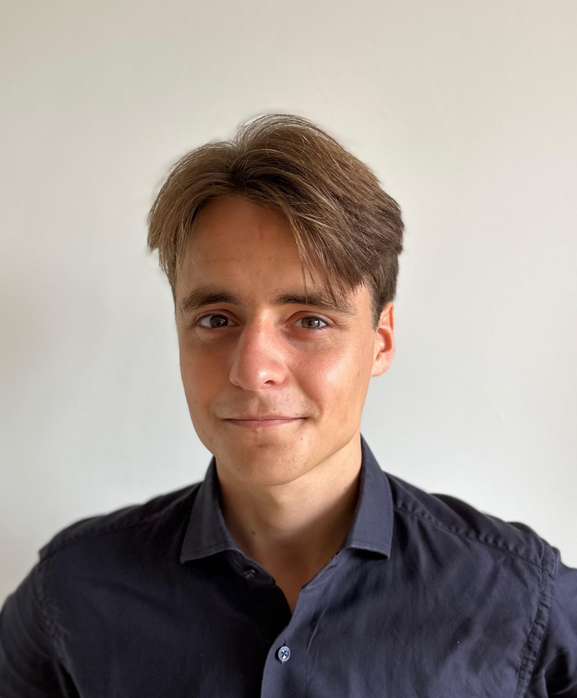
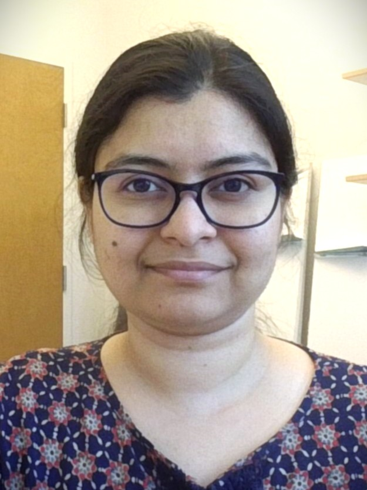
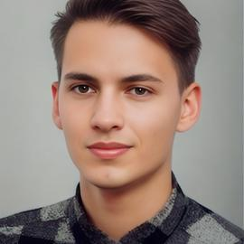
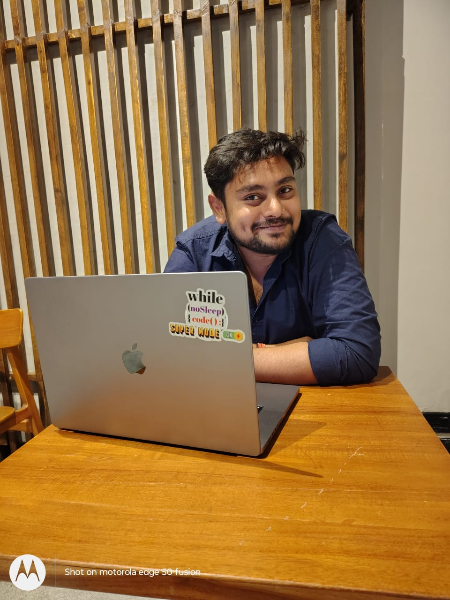
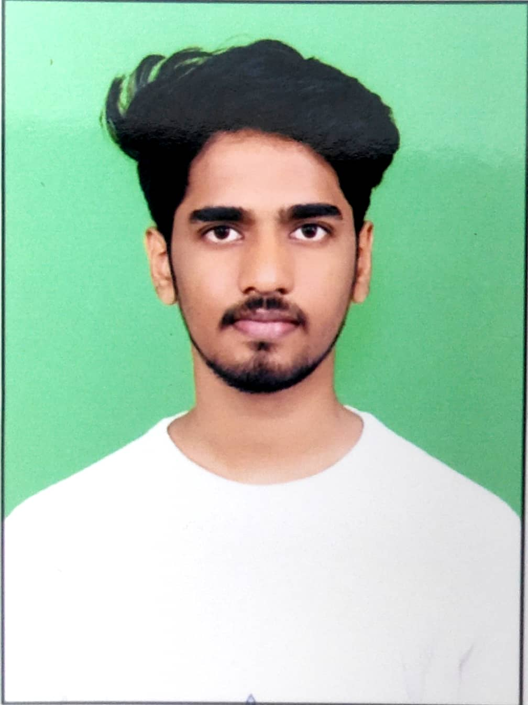
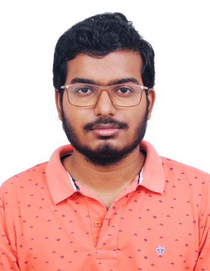

Our Team
Faculty

PhD Candidates


Ella Has
LIACS, Leiden University

Maarten Hoeneveld
Leiden University

Shikha Mallick
(affiliated at UViC, Canada)

Stanisława Stępnia
(affiliated at WUST, Poland)


Kirtidev Mohapatra
(affiliated at IIT Bhilai)

Harshith Kumar Yadav
(affiliated at IIT Ropar)

Snehasish Samanta
(affiliated at IIT KGP)
Interns/Visitors
Master Students
| Name | Thesis |
|---|---|
| Wouter Burg | Fair Sampling in Hyperedge Networks |
| Fabian Jennrich | Fairness-aware Analysis of Network Anonymization Techniques |
| Amber van den Broek | Fairness-aware Social Network Analysis |
| Daniel Gelencsér | Web-tracking dynamics of Global and Local Trackers |
Bachelor Students
| Name | Thesis |
|---|---|
| Cesar Gesta | Fair Optimization Techniques for Networks |
Alumni
| Name | Details |
|---|---|
| Christos Georghiou | Bachelor Students |
| Seyidali Bulut | Bachelor Student |
| Ashraf El Madkouki | Bachelor Students |
| Olof Tijs | Bachelor Students |
| Diego van Egmond | Master Student |
| Elze de Vink | Master Student |
| Bob J. van Beek | Master Student |
| Ray Sun | Master Student |
| Vishal Sharma | PhD, IIT Roorkee |
| Caroline Pena | Visiting PhD, 2024 |
| Hanshu Yu | Researcher, 2023–2024 |